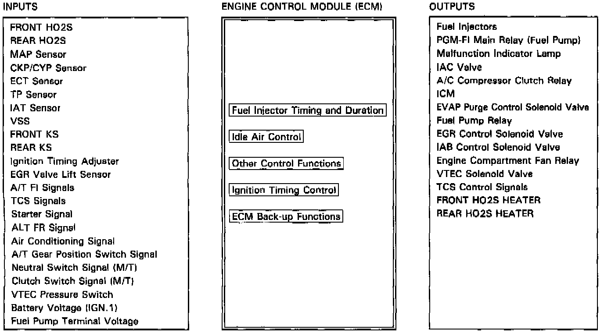

General System Description

PURPOSE/OPERATION
Fuel Injector Timing And Duration
The PGM-FI system on this model is a sequential multiport fuel injection system.The ECM contains memories for the basic discharge durations at various engine speeds and manifold pressures. The basic discharge duration, after being read out from the memory, is further modified by signals sent from various sensors to obtain the final discharge duration.
Idle Air Control
When the engine is cold, the A/C compressor is on, the transmission is in gear (A/T only) or the alternator (ALT) is charging, the ECM controls current to the idle air control valve to maintain correct idle speed.
Ignition Timing Control
The ECM contains memories for basic ignition timing at various engine speeds and manifold pressures. Ignition timing is also adjusted for engine coolant temperature.
A knock control system is also used. When detonation is detected by the knock sensor (KS), the ignition timing is retarded.
Other Control Functions
Starting Control
When the engine is started, the ECM provides a rich mixture by increasing fuel injector duration.
Fuel Pump Control
When the ignition switch is initially turned on, the ECM supplies ground to the PGM-FI main relay that supplies current to the fuel pump for two seconds to pressurize the fuel system.
When the engine is running, the ECM supplies ground to the PGM-FI main relay that supplies current to the fuel pump.
When the engine is not running and the ignition is on, the ECM cuts ground to the PGM-FI main relay which cuts current to the fuel pump.
Excellent engine performance is achieved through the use of VTEC (Variable Valve Timing and Valve Lift Electronic Control System), intake air bypass control and discharge volume control of the fuel pump.
Fuel Cut-off Control
During deceleration with the throttle valve closed, current to the fuel injectors is cut off to improve fuel economy at speeds over 1,500 rpm.
Fuel cut-off action also takes place when engine speed exceeds, 8,300 rpm, regardless of the position of the throttle valve, to protect the engine from over-revving.
A/C Compressor Clutch Relay
When the ECM receives a demand for cooling from the air conditioning system, it delays the compressor from being energized, and enriches the mixture to assure smooth translation to the A/C mode.
Evaporative Emission (EVAP) Purge Control Solenoid Valve
When the engine coolant temperature is below 1 58 0F (70°C) the ECM supplies a ground to the EVAP purge control solenoid valve which cuts vacuum to the EVAP purge control diaphragm valve.
Intake Air Bypass (IAB) Control Solenoid Valve
When the engine speed is below 4,800 rpm, the IAB control solenoid valve is activated by a signal from the ECM. Intake air then flows through the smaller chamber, and high torque is delivered. To increase air flow at engine speeds higher than 4,800 rpm, the solenoid valve is deactivated by the ECM, and the intake air flows through the larger chamber.
Exhaust Gas Recirculation (EGR) Control Solenoid Valve
When the EGR is required for control of oxides of nitrogen (NOx) emissions, the ECM supplies ground to the EGR control solenoid valve which supplies regulated vacuum to the EGR valve.
ECM fail-safe/back-up Functions
Fail-Safe Function
When an abnormality occurs in a signal from a sensor, the ECM ignores that signal and assumes a pre-programmed valve for that sensor that allows the engine to continue to run.
Back-up Function
When an abnormality occurs in the ECM itself, the fuel injectors are controlled by a back-up circuit independent of the system in order to permit minimal driving.
Self-diagnosis Function [Malfunction Indicator Lamp (MIL)]
When an abnormality occurs in a signal from a sensor, the ECM lights the MIL and stores the diagnostic trouble code in erasable memory. When the ignition is initially turned in, the ECM supplies ground for the MIL for two seconds to check the MIL bulb condition.